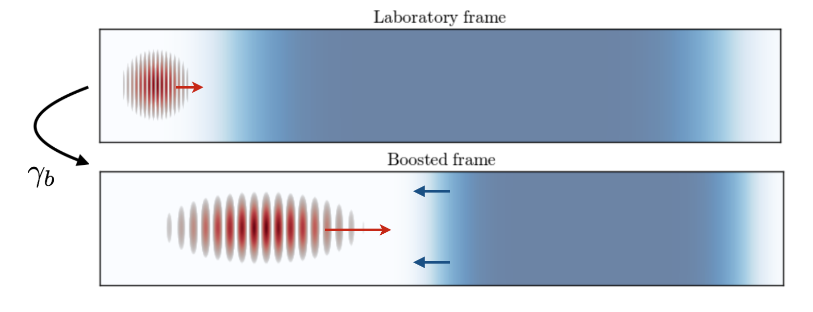
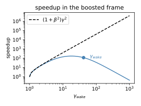
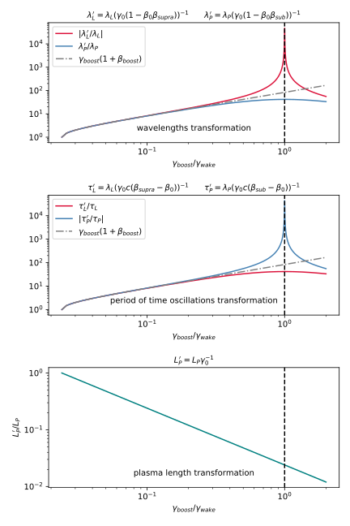
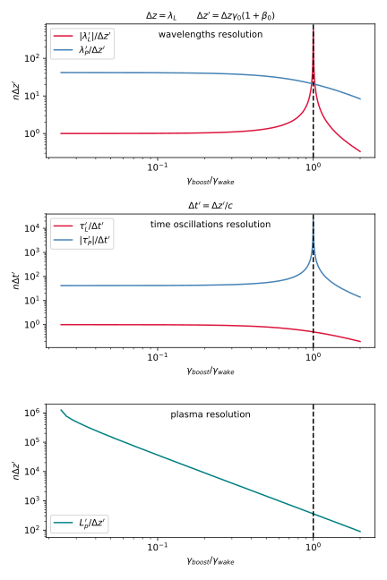

Running boosted-frame simulations¶
This page gives a quick overview of boosted-frame simulations, a technique which can speed up certain types of PIC simulations by orders of magnitude.
After explaining the principle of this technique (in the case of laser-wakefield acceleration, or LWFA), this page discusses how to handle the most important aspects of boosted-frame simulations with FBPIC:
- Converting the input parameters from the lab frame to the boosted frame
- Converting simulation results from the boosted frame to the lab frame
- Avoiding the numerical Cherenkov instability (NCI)
- Estimating the number of iterations to use in the boosted frame
- Understanding the transformation and resolution of physical objects in the boosted frame
Principle of the boosted-frame technique (for LWFA)¶
Instead of running the simulation in the reference frame of the laboratory (or lab frame for short), this technique consists in running the simulation in a different Lorentz frame, which moves in the same direction as the laser (the boosted frame). The boosted frame is characterized by its Lorentz factor \(\gamma_b\).
When performing this Lorentz transformation, the changes in space-time are computationally favorable:
- In the boosted frame, the laser is stretched and has a lower frequency.
- This allows the PIC loop to use a larger time step and cell size (in \(z\)) than in the lab frame, while still resolving the laser. (More precisely, \(\Delta z_{boosted} \approx 2\gamma_b \Delta z_{lab}\) and \(\Delta t_{boosted} \approx 2\gamma_b \Delta t_{lab}\))
- In the boosted frame, the plasma is shorter and moves relativistically towards the laser.
- This implies that the time needed for the laser to propagate through the plasma is shorter than in the lab frame, and that similarly the simulation will be shorter.
These changes in space-time are represented below.
On the whole (taking into account the longer timestep and shorter propagation time), the number of required PIC iterations is reduced in the boosted frame:
which can speed up the simulation by orders of magnitude. However, the above formula is only an approximation and the calculation of the correct number of timesteps in practice is discussed below (see Estimating the number of PIC iterations for boosted frame simulations). Note also that, in theory, the optimal value of \(\gamma_b\) is close to \(\gamma_{wake}\), i.e. the Lorentz factor associated with the phase velocity of the plasma wake (group velocity of the laser pulse in the case of laser-wakefield acceleration). However, for most simulation setups and due to limits on the spatial and temporal resolution in the boosted frame in FBPIC, values lower than \(\gamma_{wake}\) are favorable (see Transformation and resolution of physical objects in the boosted frame).
For more details on the general theory of boosted-frame simulations, see the original paper on this technique or read a more detailed description of the speedup.
Note
In the boosted frame, the plasma has a higher density (\(n_{boosted} = \gamma_b n_{lab}\)). Because of this, and because of the larger cell size, each plasma macroparticle typically represents more physical particles in the boosted frame than in the lab frame (at least when keeping the same number of macroparticles per cell).
This implies that simulating self-injection in the boosted frame will result in less macroparticles in the injected beam than in the lab frame, and therefore less statistics when evaluating e.g. the beam emittance and charge. In extreme cases (when the number of physical particles per macroparticle is comparable to the total number of self-injected particles), self-injection may not occur at all in the boosted-frame simulation.
More generally, for simulations involving injection, it is good practice to occasionally compare the results with different \(\gamma_b\), in order to make sure that the simulation is properly converged.
Warning
In lab-frame simulations, the ions are essentially motionless and the
current \(\boldsymbol{j}\) that they produce is negligeable compared to
that of the electrons. For this reason (and because the PIC algorithm
essentially only uses the current \(\boldsymbol{j}\) in order to update the
fields: see FBPIC algorithm & features), the ions are often omitted from the simulation,
in order to save computational time. (And in fact, the argument
initialize_ions in the Simulation object is set to
False by default.)
However, this is no longer valid in boosted-frame simulation, because
in this case the ions move with relativistic speed and do produce a
non-negligible current \(\boldsymbol{j}\). Therefore, in boosted-frame
simulations, the ions are required. Make sure to include them, either
by setting the flag initialize_ions=True in the Simulation
object, or by adding them separately with add_new_species.
Converting input parameters from the lab frame to the boosted frame¶
When running a simulation in the boosted frame, all the parameters (e.g. laser wavelength, plasma density, etc.) needed to be converted from their known value in the lab frame to their corresponding value in the boosted frame.
Fortunately, most functions and classes in FBPIC can perform this conversion
automatically, so that the user only needs to pass the lab-frame values,
along with the value of \(\gamma_b\). For instance, the fbpic.main.Simulation class
will automatically convert the timestep and box size from typical lab-frame values
to the corresponding boosted-frame values.
For each function or class that you use, please look at the corresponding
documentation in the section API reference to see if it supports
automatic parameter conversion. If it is not the case, you can instead use the
fbpic.lpa_utils.boosted_frame.BoostConverter, which implements the Lorentz transform
formulas for the most common physical quantities. Additionally, a function is provided
to automatically estimate the required PIC iterations in the boosted frame (see Estimating the number of PIC iterations for boosted frame simulations).
You can see an example of these different methods for parameter conversion in the boosted-frame example script of the section How to run the code.
Converting simulation results from the boosted frame to the lab frame¶
Although the simulation runs in the boosted frame, it is desirable to have the results in the lab frame, since this is usually easier to interpret.
FBPIC implements on-the-fly conversion of the results,
and can thus output the fields and macroparticles directly
in the lab frame. See the documentation of the classes
fbpic.openpmd_diag.BackTransformedFieldDiagnostic and
fbpic.openpmd_diag.BackTransformedParticleDiagnostic in order
to use this feature.
Warning
When using the regular classes fbpic.openpmd_diag.FieldDiagnostic,
and fbpic.openpmd_diag.ParticleDiagnostic, the corresponding
diagnostics will contain the fields and macroparticles in the boosted frame.
Note
By default, the converted diagnostics (i.e. in the lab frame) are stored in the
folder lab_diags, while the raw diagnostics (i.e. in the boosted frame) are
stored in the folder diags.
Because of non-simultaneity between Lorentz frames, the files in lab_diags
will be filled progressively with data, from the right-hand side of
the simulation box to its left-hand side, as the simulation runs.
If the chosen number of PIC iterations is insufficient, then some of these
files may be incomplete. (This typically shows up as the fields being zero
in the left-hand side of the box.)
Avoiding the Numerical Cherenkov Instability (NCI)¶
When running simulations in the boosted frame, a numerical instability (known as the Numerical Cherenkov Instability, or NCI) can potentially affect the simulation and degrade its results.
FBPIC suppresses this instability by using the Galilean technique. (See
the original papers here
and here
for more information on this technique.) In order to use this suppression algorithm,
the user simply needs to set the argument v_comoving of the fbpic.main.Simulation
class to a velocity close to:
(Again, see the example in the section How to run the code)
Warning
The suppression of the NCI is only effective in the case where
or in terms of corresponding lab-frame quantities:
In the case where the above condition is not met, there is, to our knowledge, no existing solution to suppress the NCI. Note that FBPIC does not check whether the above condition is met in a given simulation ; instead the user is responsible for ensuring this.
Estimating the number of PIC iterations for boosted frame simulations¶
In order to calculate the required number of timesteps in a boosted frame simulation in practice, we can calculate and compare the total interaction time of the physical objects in space. In a lab frame simulation, the total interaction time \(T_{interact}\) can be defined as the time needed for the moving window with length \(l_{window}\) to cross the plasma with length \(L_{plasma}\).
Here \(v_{window} = \beta_{window}c\) is speed of the moving window (which is typically set to the phase velocity of the plasma wake \(\beta_{window} = \beta_{wake}\)) and \(v_{plasma} = \beta_{plasma}c\) is the speed of the plasma, which would be \(v_{plasma} = 0\) in the lab frame.
Consequently, the number of iterations in the lab frame are given by:
When using the boosted frame technique, FBPIC will transform all those quantities into the new frame of reference:
and using the above formula we can calculate the interaction time in the boosted frame. The number of required iterations are then given by:
where \(\Delta t' = \gamma (1+\beta) \Delta t\) is the timestep in the boosted frame.
The BoostConverter object exposes the above formula for \(T_{interact}'\)
as function interaction_time that can be used to calculate the
required number of timesteps in the boosted frame for a given moving window sliding
across an initially static object with length \(L_{interact}\) (e.g.
the plasma \(L_{interact}=L_{plasma}\)). In addition, the timestep in
the boosted frame \(\Delta t'\) can be accessed through sim.dt in
FBPIC (see the boosted-frame script in How to run the code).
The following figure shows the calculation of the expected speedup (defined as the reduction in the number of PIC iterations, \(N_{lab}/N_{boost}\)) of a typical laser-plasma acceleration case. Lets assume a simulation box (moving window) of length \(l_{window} = 100 \, \mu m\) interacting with a plasma of length \(L_{plasma} = 12 \, mm\). Assuming a plasma density of \(n_{e}=10^{24} \, m^{-3}\), we set the velocity of the moving window to match the plasma wake phase velocity, i.e. \(\gamma_{wake} \approx 42\).
This simple example highlights two important aspects of choosing the right \(\gamma_b\) in practice. First, it can be seen that the speedup does only follow the simple scaling law \((1+\beta_b^2)\gamma_b^2\) for \(\gamma_b \ll \gamma_{wake}\), and second, that the optimum speedup occurs at a \(\gamma_b < \gamma_{wake}\) before the simulation slows down again.
Note
As highlighted in the above example, there is an optimum \(\gamma_b\) for which the interaction time is minimized for a given simulation setup. The speed up of a boosted frame simulation will reverse for too high values of \(\gamma_b\). In practice, it is often advisable to fulfil \(\gamma_b^2 < L_{plasma}/l_{window}\) for maximum efficiency and \(\gamma_b < \gamma_{wake}/2\) to properly resolve the physical objects (see next section).
Transformation and resolution of physical objects in the boosted frame¶
Although the basic principles of boosted frame simulations have been covered already in the previous sections, understanding the transformation of physical quantities in the boosted frame can be more tricky and will be explained in more detail in the following. We will restrict ourselves to the use case of laser-plasma acceleration where a simple laser propagates through a homogeneous plasma.
Fundamentally, the spatial and temporal scales that need to be resolved are the laser and the plasma wavelength, \(\lambda_{l}\) and \(\lambda_{p}\) (spatial scale), the period of time oscillations of the laser and the plasma \(\tau_{l}\) and \(\tau_{p}\) (temporal scale) and finally the spatial scale of the plasma itself (\(L_{p}\)). The following figure shows the normalized transformation of these quantities for different values of \(\gamma_b\) normalized to \(\gamma_{wake}\).
For low boosting factors \(\gamma_b \ll \gamma_{wake}\), the spatial and temporal scales of the laser and the plasma will equally increase \(\propto \gamma_b (1+\beta_b)\) and the plasma will contract as \(L_{p} \gamma^{-1}\).
For higher boosting factors, however, the difference in phase velocity between the laser and the plasma wave becomes apparent in the spatial and temporal scalings. The laser phase velocity is supra-luminic in plasma \(\beta_{supra} = 1 + n_{e}/(2 n_{c})\) compared to the sub-luminic phase velocity of the plasma wake \(\beta_{sub} = 1 - n_{e}/(2 n_{c})\). Here \(n_{c}\) is the critical plasma density.
In practice, this discrepancy in the Lorentz transformation of both quantities can cause diverging spatial and temporal resolutions in the simulation if \(\gamma_b\) approaches \(\gamma_{wake}\). In FBPIC, the longitudinal resolution is transformed by default as \(\Delta z'=\Delta z \gamma_b (1+\beta_b)\). As shown in the next figure, this will cause a decrease in spatial resolution of the plasma wave, as well as a decrease in temporal resolution of the laser oscillations, for \(\gamma_b \gtrsim \gamma_{wake}/2\).
Warning
As explained in the section above, the spatial and temporal scales of the physical objects in the simulation transform differently in the boosted frame. Therefore, the relativistic factor of the boosted frame should always be much smaller than the plasma wake velocity. \(\gamma_b < \gamma_{wake}/2\) should be satisfied at least for a typical laser-plasma acceleration simulation.